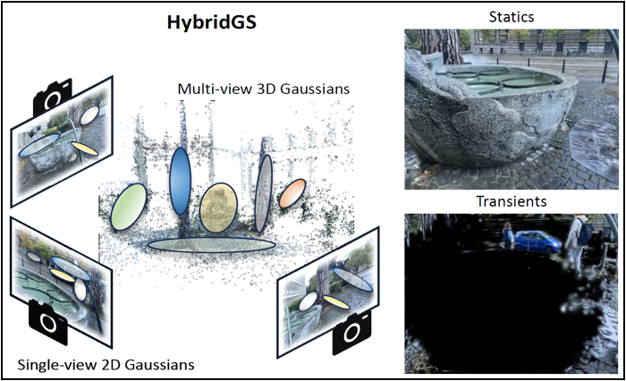

For a complete list of my publications, please refer to my
Google Scholar profile.
( * corresponding auhtor)


Preprint
Sketch-in-Latents: Eliciting Unified Reasoning in MLLMs
Jintao Tong, Jiaqi Gu, Yujing Lou, Lubin Fan* , Yixiong Zou*, Yue Wu, Jieping Ye, Ruixuan Li*
[paper]

2026
CC-VQA: Conflict- and Correlatoin-Aware Method for Mitigating Knowledge Conflict in Knowledge-Based Visual Question Answering
Yuyang Hong, Jiaqi Gu, Yujing Lou, Lubin Fan* , Qi Yang, Ying Wang, Kun Ding, Yue Wu, Shiming Xiang*, Jieping Ye
CVPR, 2026.
[to appear]
2025
Re-ranking Reasoning Context with Tree Search Makes Large Vision-Language Models Stronger
Qi Yang, Chenghao Zhang, Lubin Fan* , Kun Ding, Jieping Ye, Shiming Xiang*
International Conference on Machine Learning (ICML), 2025. Spotlight (top 2.6%)
[project
| paper]
AddressVLM: Cross-view Alignment Tuning for Image Address Localization using Large Vision-Language Models
Shixiong Xu, Chenghao Zhang, Lubin Fan* , Yuan Zhou, Bin Fan, Shiming Xiang*, Gaofeng Meng, Jieping Ye
arXiv preprint, 2025.
[paper]

NoPe-NeRF++: Local-to-Global Optimization of NeRF with No Pose Prior
Dongbo Shi, Shen Cao, Bojian Wu, Jinhui Guo, Lubin Fan* , Renjie Chen*, Ligang Liu, Jieping Ye
Computer Graphics Forum (Proc. of Eurographics), 2025.
[paper]
CoL3D: Collaborative Learning of Single-view Depth and Camera Intrinsics for Metric 3D Shape Recovery
Chenghao Zhang, Lubin Fan* , Shen Cao, Bojian Wu, Jieping Ye
IEEE International Conference on Robotics and Automation (ICRA), 2025.
[paper]
Efficient roof reconstruction from a single aerial image
Yu Du, Mingyang Zhao, Jian Shi, Lubin Fan , Dong-Ming Yan
Computers & Graphics, 2025.
[paper]
2024
2022
6D Object Pose Estimation in Cluttered Scenes from RGB Images
Xiaolong Yang, Xiaohong Jia, Yuan Liang, Lubin Fan
Journal of Computer Science and Technology, 2022.
[paper]
A Topography-Aware Approach to the Automatic Generation of Urban Road Networks
Zhou Fang, Jiaxin Qi, Lubin Fan , Jianqiang Huang, Ying Jin, Tianren Yang.
International Journal of Geographical Information Science,
Vol. 36, No. 10, pp. 2035-2059, 2022.
[paper]
A Framework for Human-Computer Interactive Street Network Design Based on a Multi-Stage Deep Learning Approach
Zhou Fang, Jiaxin Qi, Lubin Fan , Jianqiang Huang, Ying Jin, Tianren Yang.
Computers, Environment and Urban Systems, 2022.
[paper]
2021
DecorIn: An Automatic Method for Plane-based Decorating
Yuan Liang, Lubin Fan* , Peiran Ren, Xuansong Xie, Xian-Sheng Hua.
IEEE Transactions on Visualization and Computer Graphics (TVCG), Vol. 27, No. 8, pp. 3438-3450, 2021.
[paper]
Combining Convex Hull and Directed Graph for Fast and Accurate Ellipse Detection
Zeyu Shen, Mingyang Zhao, Xiaohong Jian, Yuan , Lubin Fan , Dong-Ming Yan.
Graphical Model, Article 116, 2021.
[paper]
2020

2019

2018

2016

2014

2013

2012

2011
iCutter: A Direct Cut Out Tool for 3D Shapes
Min Meng,
Lubin Fan and Ligang Liu.
Journal of Computer Animation and Virutal Worlds,
Vol. 22, No. 4, pp. 335-342, 2011.
[project page
| paper
| video
| slides]